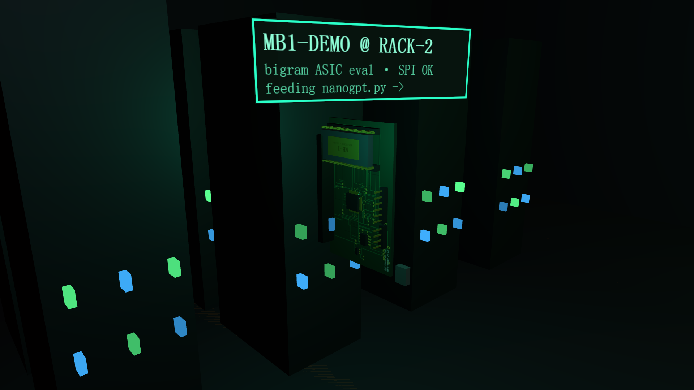
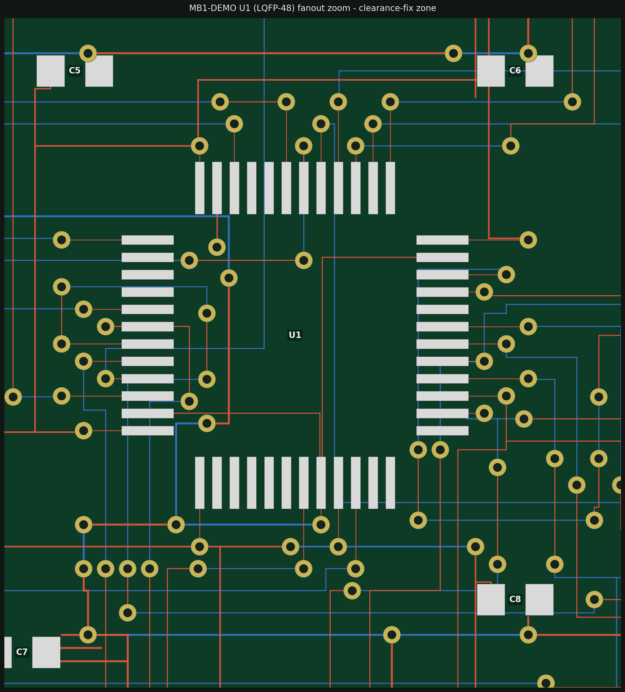
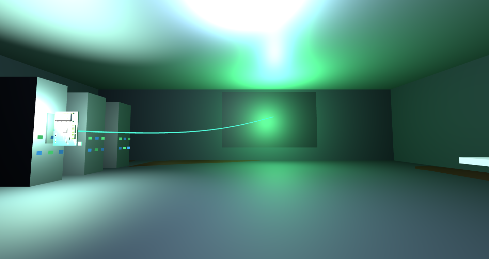

计算站
ops-compute-01 · 大屏跑着 bigram，硅片插在楼下机架

RACK-2 夜巡：MB-1 评估板刀片在位 · SPI OK · 正在喂 nanogpt.py

U1（LQFP-48）扇出布线 —— 真实版图，非示意

机房：数据缆从 2 号机架跨向大屏（引擎内实拍 21:00）
芯片 MB-1char-bigram 推理 ASIC · sky130 全流程 GDS 26.3 MB · route DRC 0
📐 验证RTL 13 文件 · iverilog+xsim 双仿真器对拍 · SRAM 等价 11069 读 0 失配
📐 硬件FPGA Arty 比特流实测 · 心跳 LED 按 HEARTBEAT 语义闪烁
PCB2 层 · 467 段走线 · A* 自动布线 ≥13 轮 · DRC 5 轮清零 · Gerber 出厂 2 版（BOM/CPL 齐）
📐 闭环大屏 JS bigram（软件孪生）↔ 机架硅片本体——同一个算法，两种存在
城内板 3D 直接绘自 EasyEDA 导出真实铜线 · 插 2 号机架 · poi_mb1 知识卡在位
资源链
水冰 → 推进剂 → 城建 —— 全部就地取材
Rodwell 水冰井res-rodwell-01 + 双罐水银行
📐 井寿Stefan 移动边界校核：15 kWe 井寿 >669 sol（整一个火星年）
📐 水银行双罐 26 m³ = 60 sol 全球尘暴需求 ×114% · 压力包线 700 sol 零断供
管线DN25 + 5 cm 气凝胶 · 火星重力 12 m 扬程仅需 44.5 kPa
ISRU 推进剂厂res-isru-01 · Sabatier
工艺大气 CO₂ + 电解 H₂（水源=隔壁 Rodwell）→ CH₄ / O₂
📐 火箭账本长十乙每发 215 t 推进剂 / 1174 MWh · 200 kWe → 3.3 发/窗口
交付36.2 m 工艺线 · Rodin 管线 GLB 自动入库落位
Regolith 打印工地ops-printer-01 · 龙门
整机26 m 龙门打印机 · 半成穹顶 0.5 m 层高螺旋堆叠
上墙同工艺已用于地下城入口挡土墙与玄关气闸厅——打印层脊肉眼可见
📐 同门工地机器人与矿场共享感知管线（CIS 成像模型 · 5 Hz 自主避障）